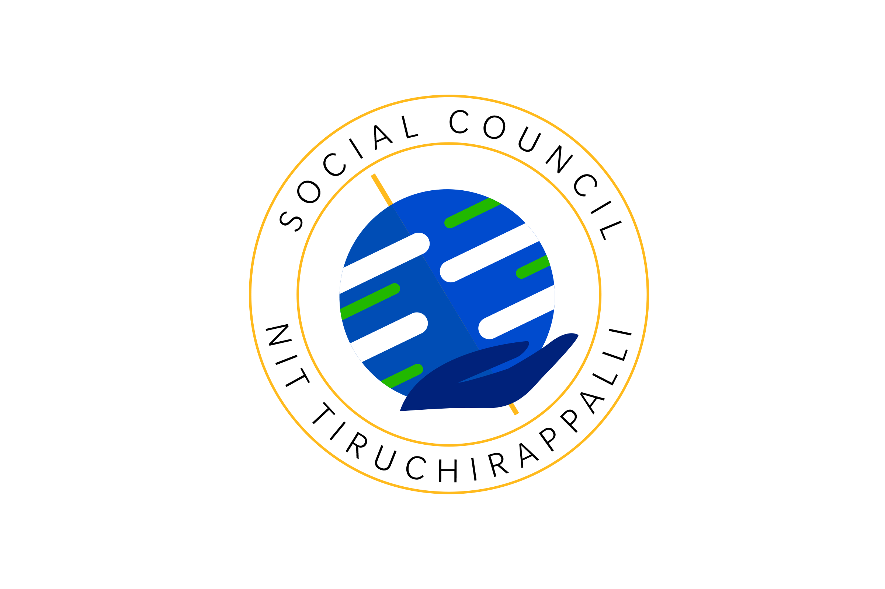

Social Innovation is the way to bring Humanity back on Track.

We work with the aim of assisting the social clubs in the campus grow, also conducting activities that do not fall under the domain of any of these clubs. Additionally, every year, we organize HumaNITTy, the NIT Trichy initiative of Daan Utsav (Joy of Giving Week).